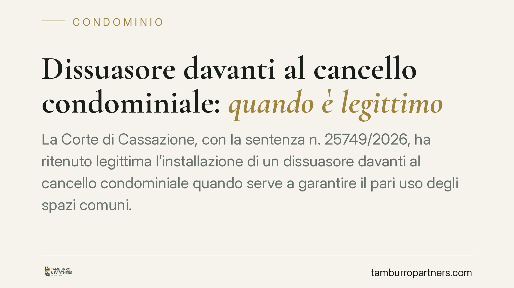

Dissuasore davanti al cancello condominiale: quando è legittimo
La Corte di Cassazione, con la sentenza n. 25749/2026, ha ritenuto legittima l'installazione di un dissuasore davanti al cancello condominiale quando serve a garantire il pari uso degli spazi comuni. Il principio è netto: anche una sosta breve può integrare abuso della cosa comune. Una decisione che ridisegna gli equilibri tra libertà del singolo e diritti degli altri condomini.

Il caso deciso dalla Cassazione
Una condomina contestava l'installazione, davanti al cancello di accesso, di un dissuasore deliberato dall'assemblea. A suo dire, il manufatto limitava la possibilità di sosta breve nell'area comune e comprimeva un uso che riteneva legittimo.
La Corte di Cassazione, Sez. II Civile, con la sentenza n. 25749 del 23 settembre 2026, ha respinto la tesi. Il dissuasore, se finalizzato a garantire a tutti l'accesso e il transito, non lede il diritto del singolo: lo riconduce entro i limiti che la legge impone a ciascun condomino.
Inquadramento normativo
Il riferimento è l'art. 1102 del codice civile, che disciplina l'uso della cosa comune. La norma consente a ciascun partecipante di servirsi del bene comune, ma pone due limiti precisi: non alterarne la destinazione e non impedire agli altri di farne pari uso.
Sono i due argini del ragionamento. La sosta di un veicolo davanti al cancello, anche se breve, ostacola l'ingresso e l'uscita degli altri condomini. In questo modo viola il divieto di impedire il "pari uso": non conta la durata, conta l'effetto sull'utilizzo altrui.
La Corte chiarisce così un punto spesso frainteso. L'abuso della cosa comune non richiede un'occupazione stabile o duratura. È sufficiente che l'uso individuale comprima, anche temporaneamente, la facoltà degli altri di servirsi dello spazio secondo la sua destinazione. Il dissuasore diventa allora uno strumento per riequilibrare, non per limitare in modo arbitrario.
Implicazioni pratiche
La decisione ha ricadute concrete per amministratori e condomini.
Per il condominio, si conferma che l'assemblea può deliberare misure fisiche a tutela dell'accesso comune, purché proporzionate allo scopo. Il dissuasore non è di per sé un'innovazione vietata: è un intervento che ripristina la funzione dello spazio.
Per il singolo condomino, cade l'idea che la sosta "solo per un attimo" sia sempre tollerata. Se quella sosta blocca il transito, integra un uso non conforme all'art. 1102 c.c., a prescindere dai minuti.
Per l'amministratore, cresce il margine di intervento a difesa degli spazi comuni, ma resta l'onere di documentare la reale finalità della misura: garantire il pari uso, non favorire alcuni condomini a danno di altri.
Attenzione a non generalizzare. La legittimità del dissuasore dipende dal caso concreto: dalla conformazione degli spazi, dalla delibera che lo autorizza e dalla sua idoneità a raggiungere lo scopo senza sacrifici sproporzionati. Un manufatto che impedisse del tutto l'uso comune, senza giustificazione, resterebbe illegittimo.
Cosa fare in concreto
- Verificate la delibera: prima di installare un dissuasore, accertate che l'assemblea abbia deliberato con le maggioranze corrette e che il verbale espliciti la finalità di tutela dell'accesso comune.
- Documentate il problema: raccogliete evidenze (foto, segnalazioni, verbali) delle soste che ostacolano il transito. La prova dell'effettivo pregiudizio rafforza la legittimità della misura.
- Valutate la proporzionalità: scegliete uno strumento idoneo allo scopo senza azzerare l'uso comune. Un dissuasore che consenta comunque il transito è più difendibile di una barriera totale.
- Informate i condomini: comunicate in anticipo la misura e le sue ragioni, riducendo il rischio di contenzioso.
- Chiedete una verifica preventiva: consigliamo di sottoporre delibera e progetto a un controllo tecnico-giuridico prima dell'installazione, per evitare vizi che espongano il condominio a impugnazioni.
Conclusioni
La sentenza n. 25749/2026 sposta l'attenzione dalla durata all'effetto della sosta. Il criterio guida resta il pari uso della cosa comune: quando una condotta individuale lo comprime, la reazione del condominio può essere legittima. Ogni situazione, però, va valutata sulla base degli spazi concreti e della delibera adottata.
---
*Contributo informativo a cura di Tamburro & Partners - Avv. Giuseppe Tamburro. Non costituisce parere legale.*
Ogni condominio ha una storia a sé.
Se gestisci un'amministrazione e vuoi un confronto su una specifica questione condominiale, scrivi allo studio. Ti rispondiamo entro un giorno lavorativo.